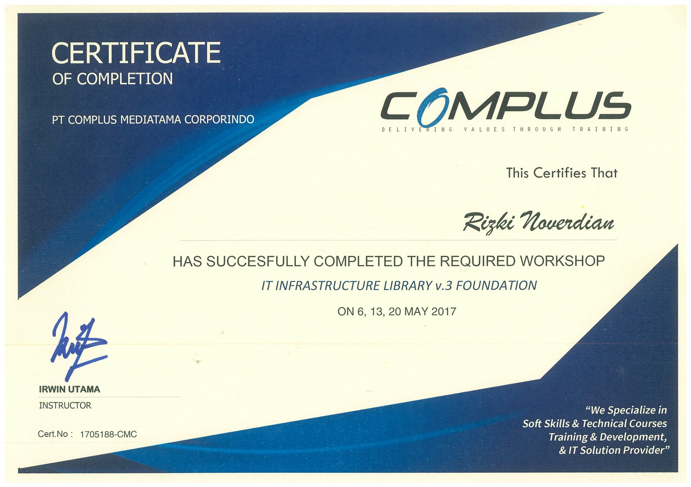

Rizki Caesar Noverdian
I'm
About
Full Name
Rizki Caesar Noverdian
Date of Birth
Sukabumi, November 14, 1990
Education
Bachelor of Science in Informatics Engineering, STMIK PASIM Sukabumi
An experienced IT professional with over 10 years in the industry, skilled in IT operations, project management, infrastructure, and customer service. Also has more than 2 years of experience in electrical engineering as a partner of PLN for installation, maintenance, and administration of electrical systems.
Experience
PT Prawita Karya – IT (2025)
- Create and manage corporate domains using DSM Synology.
- Network infrastructure design using mikrotik.
- Provide technical support for hardware and software issues ensuring smooth operations and minimal downtime for staff.
- Perform routine maintenance and IT system repairs to keep technology infrastructure in optimal condition.
- Perform maintenance and design company websites.
PT Bonofactum – IT Support (2024)
- Provide technical support for hardware and software issues ensuring smooth operations and minimal downtime for staff.
- Perform routine maintenance and IT system repairs to keep technology infrastructure in optimal condition.
- Manage corporate domains using DSM Synology.
- Mikrotik administration.
- Google Workspace enterprise administration.
- Asana apps administration
- Design and manage company CCTV using NVR.
PT Dentsu Indonesia – IT Support Analyst (2015–2023)
- Supporting 1000+ employees.
- Identity user issue, diagnosing problem and delivering workable solution via phone, email and desk.
- Providing and distribusi for Apple and Windows devices including Desktop, iMac, Laptop, Macbook and iP Phone for employee.
- Troubleshooting windows devices, apple devices,network devices and printer devices.
- Software support for Windows & Apple Apps.
- Windows Server, Microsoft o365, SCCM Console, Apple Business Manager Administration.
- Asset management and meeting support.
- Prepare and standby offline/hybrid meetings and events.
PT Sparindo Alfa Persada – Electrical Engineering (2010–2012)
- Perform data input, archiving and recording.
- Check, repair and maintain distribution substation electrical systems.
- Install and replace electrical parts and components.
Skill Highlights
- Software and Hardware Troubleshooting
- Server Performance Management
- Infrastructure Project Support
- On-site and Remote Support
- Firewall and IT Security Management
- Windows, Linux, and Mac Environment
- Operating Systems: Windows, Linux, macOS
- SLA’s (Service Level Agreement) Monitoring
- DSM Synology Operation System
- Mikrotik Operation System
- Electrical Engineering
Certificates
IT Infrastructure Library Foundation v3 – PT Complus Mediatama Corporindo (2017)
Contact
rizki.noverdian@gmail.com
0822 1111 5315
Sukabumi, West Java, Indonesia